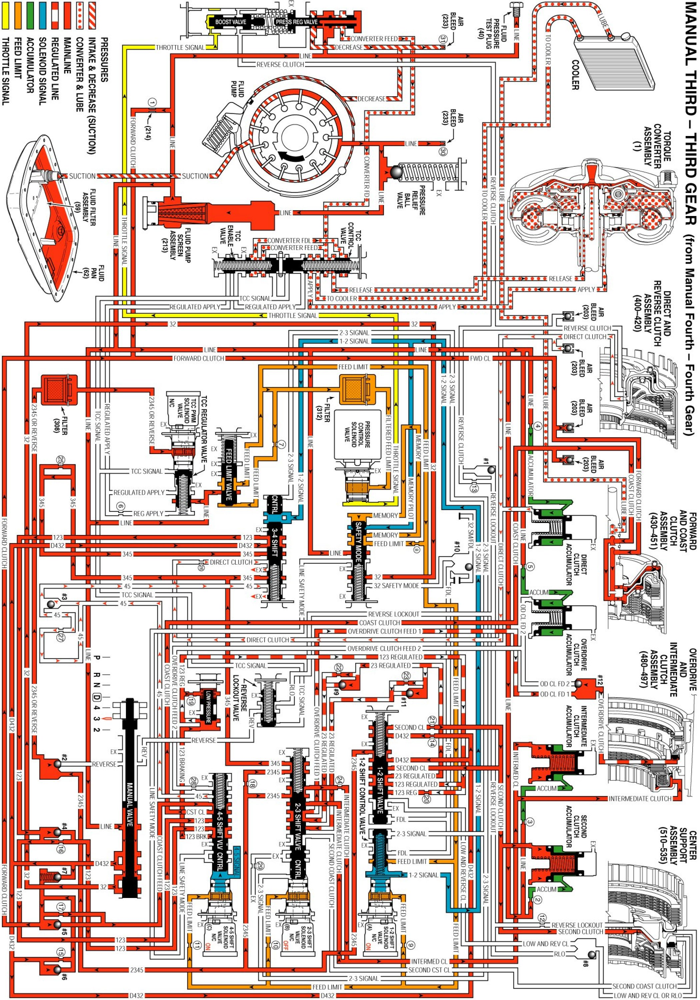

Manual Third Gear
Manual Third Gear
Manual Third - Third Gear may be selected at any time while the vehicle is being operated in a forward gear range. However, TCM control prevents the transmission from shifting above Third gear. When the gear selector lever is moved to Manual Third range from Manual Fourth - Fourth Gear, the manual valve also moves. Changes to the hydraulic and electrical systems are as follows:
Overdrive Clutch Applies
Manual Valve
- Line pressure enters the 32 fluid circuit at the manual valve. 32 fluid is routed to the safety mode valve.
1-2 Shift Solenoid (SS) Valve
- The 1-2 SS valve is energized, allowing feed limit fluid to enter the 1-2 signal fluid circuit. 1-2 signal fluid is routed to the safety mode valve and to the 3-4 shift valve.
3-4 Shift Valve
- 1-2 signal fluid overcomes 3-4 shift valve spring force and moves the 3-4 shift valve to the applied position. This allows D432 fluid to enter the 123 fluid circuit, and allows direct clutch and 45 fluids to exhaust.
#4 Ball Check Valve
- 123 fluid seats the #4 ball check valve and passes through orifice #16 on the way to the 4-5 shift valve.
4-5 Shift Valve
- 123 fluid passes throught the 4-5 shift valve (333) into the 123 braking fluid circuit.
Low Pressure Control Valve
- 123 braking fluid is regulated into the 123 regulated fluid circuit through the low pressure control valve (383).
1-2 Shift Valve
- 123 regulated fluid passes through the 1-2 shift valve into the 23 regulated fluid circuit.
#9 and #11 Ball Check Valve
- 23 regulated fluid seats the #9 and the #11 ball check valves and is forced through orifices #22 and #23.
2-3 Shift Valve
- 23 regulated fluid passes through the 2-3 shift valve into the overdrive clutch feed 1 fluid circuit.
#12 Ball Check Valve
- Overdrive clutch feed 1 fluid seats the #12 ball check valve against the overdrive clutch feed 2 passage and enters the overdrive clutch fluid circuit.
Overdrive Clutch
- Overdrive clutch fluid is then directed to the overdirve clutch piston to apply the overdrive clutch plates.
Direct Clutch Releases
Direct Clutch
- Direct clutch fluid exhausts from the direct clutch piston to release the direct clutch plates.
3-4 Shift Valve
- Direct clutch fluid flows through orifice #26 to the 3-4 shift valve where it exhausts.
Shift Accumulation
Direct Clutch Accumulator
- Direct clutch fluid also exhausts from the direct clutch accumulator assembly. Accumulator fluid moves the direct clutch accumulator piston against accumulator spring force in preparation for another application of the direct clutch.
In Manual Third - Third Gear, the TCC will not release if Manual Third was selected while the vehicle was operating in Overdrive Range - Fifth Gear with the TCC applied. Under normal operating conditions, the converter clutch operates the same way in Manual Third - Third Gear as in Overdrive Range - Third Gear.
Manual Third
Manual Third:
